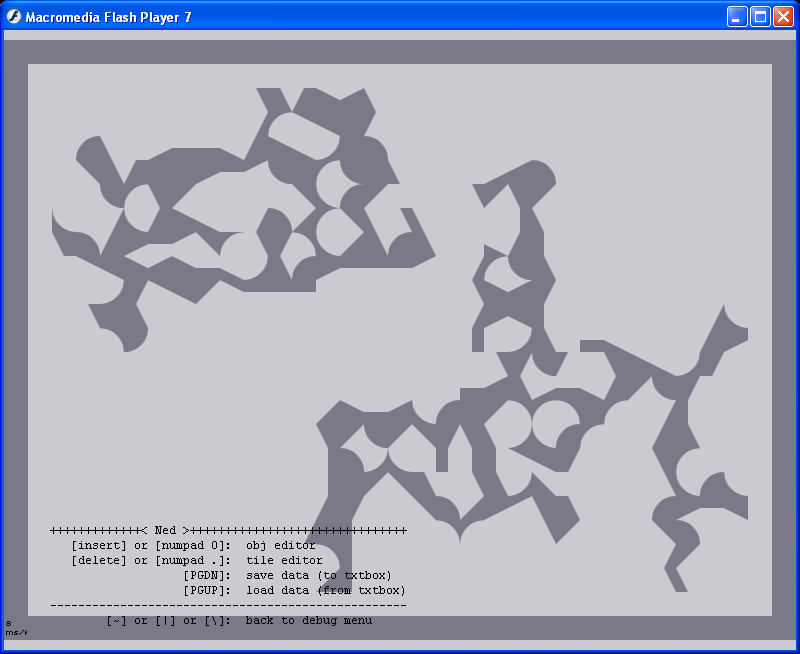

#9963 1 2006-07-09T21:48:35Z iangb 1.2 version released - see further down the page, here
1.3 released - look here. Have an invert/'shrink' function.
It's been a while since I've programmed anything... so here's something new.
Map Maker 1.1
This program 'grows' a map, based on tile positioning. You can either grow a pre-made tileset, or seed one randomly.
The controls should be obvious - click 'grow (one step)' to advance one step, or click 'grow to finish' to advance as far as possible. To grow a premade tileset, paste map data into the text box and click 'load' before growing. To seed a new map, click the 'seed' button. 'Undo' resets the text one grow back (either one step or to completion).
When clicking 'grow to finish' - be patient, as this may take a good few seconds, depending on your CPU speed. Having N not running/in Boss mode speeds up the process drastically.
The maps made vary in quality, but all make sense and sometimes are rather good indeed. Use, Enjoy, and tell me what you think.
Coming in 1.2 (if I get good feedback/can be bothered):
Level preview box
Expanded tileset area (currently a single-tile border of the map is ignored)
Further suggestions welcome
Straight/curved tiles options (pseudo-worked-around, To Be Improved)
Trackback abilities - hopefully to go back to multiple stages
EDIT:Have a screenshot of an example tileset just made.
EDIT2: More things added to my 'to-do' list for 1.2.

Attachment (lost): post-33-1152481715.exe
#200753 2 2006-07-09T21:56:02Z KinGAleX Wow, ian. This is truly amazing.
The only extra thing that might be good to add is something that makes all of the tiles the same essential variety, or at least a bit closer to reality. At the moment, when you create one from a seed, you end up with just as much curve as straight, and that kind of makes them all look the same. If there was some way to disable that, or even make a slider for if you wanted curvy or straight, that would be great.
But seriously, great job.
#200779 3 2006-07-09T23:22:21Z Mr_Mongoose Perhaps have an undo last grow button, for the newer version? I'm sure some people might find this useful.
I really like the program, you have done a good job with it. It seems to amke fantastic abstract tilesets, which you can actually use.
If we find a tileset we like, can we use it and submit it to NUMA? we'll give you credit of course.
Good job, overall, fantastic program.
#200780 4 2006-07-09T23:30:37Z LouDog004 Gorgeous
#200784 5 2006-07-09T23:47:07Z McP3000 wow, so original of an idea, im sure ill use it
#200828 6 2006-07-10T04:06:12Z 47 If you ever consider porting it to Mac, I'd love to be your guinea pig.
#200860 7 2006-07-10T08:14:16Z Borealis You're a god, ian.
#200862 8 2006-07-10T08:20:57Z sweep Fantastic, but the best thing about this is that there are clear ways to develop it even further. KA and Mongoose are spot on, the ability to choose a particular set of tiles/ a style to work with and the ability to go back a step would be great.
#200866 9 2006-07-10T08:34:36Z astro My god, that's brilliant.
#200874 10 2006-07-10T08:43:23Z krusch Hmm. It won't install for me: it says my MSVBVM6O.DLL is missing.
I'm not sure how I can fix that, but I'm anxious to try this thing out. Looks fantastic.
#200877 11 2006-07-10T08:55:02Z astro #200938 12 2006-07-10T14:25:07Z Borealis I made a level with this map generator. Fair enough I edited it quite heavily, but even still, I think it turned out to be a good level.
Iconoclasm Sweeps Cappadocia

Brilliant program, very easy to use and good results, too.
#200943 13 2006-07-10T14:45:15Z iangb ...I'm glad you like it. *starts work on 1.2 updates*
Incidentally, I discovered that a good way to get useable tilesets is to draw a very rough shape with 1 tiles in Ned, and grow it all one step. As per usual, results do vary, but hopefully a preview window/decent undo function will help with that.
#200998 14 2006-07-10T17:21:55Z iangb ..wow. That took me less time than I thought. Hot on the heels of the first release, comes
Map Maker 1.2
New features:
'Style' option - change tiles in any existing/generated tileset to straight/curved(concave/convex or a mix of the two)/mixed (both straight and curved)
Preview window - See the tileset grow as you click
Advanced trackback option - unlimited (well, up to 1000000) undos/redos. Like the same function in Word, this overwrites itself if you undo then grow. You could probably break this if you tried hard enough, but normal use shouldn't cause a problem, and any problem is solved with a quick quit/restart
I've also removed the 'grow to finish' button, as it takes less time and is easer to control to simply keep clicking until there is no change in the tileset. Loading also now happens automatically.
Comments/Bug reports/Update suggestions are very welcome.
Attachment (lost): post-33-1152552147.exe
#201000 15 2006-07-10T17:26:47Z glenno14 Wow thats amazing...
And the maps you make are actually semi-decent!
EDIT: How did you actually make this? Did you use a certain program?
#201017 16 2006-07-10T17:53:10Z iangb The program is written entirely in Visual Basic (allthough I drew the tiles in paint). It's basically a huge collection of if/then statements... I'm sure I could optomise it a bit, but it would take me too long.
I spent way too long planning this, before typing any code.
#201018 17 2006-07-10T17:53:23Z sweep Ian, this is now brilliant with the styles.
What you can do is input an existing tileset, and change the style, and then it changes the style of the map for you.
Awesome.
How about: if you could input a tileset, and it could "read" the general style, and then grow it accordingly.
#201019 18 2006-07-10T17:56:57Z AluminumHaste It's a nice tool. What language did you use? C??
#201024 19 2006-07-10T18:23:44Z Lazylump The program is written entirely in Visual Basic
No, Visual Basic =P
#201093 20 2006-07-10T22:11:11Z elaxion Whoa, now I can be a decent map maker!!!
#201102 21 2006-07-10T22:51:09Z Spiker This is a great tool and makes some really cool stuff, though the open tiles i sometimes fill in cause it looks weird.
I had a very interesting idea with this though, take open tilesets like castle on crumbling rock and transform them with this, making them more organic. I got some really cool maps from it
#201114 22 2006-07-10T23:13:39Z Mr_Mongoose You spelled straight 'straght'. Just something you Might want to fix up. I love having the screenshot. Awesome additions, and it didn't take long either. I love the 'style', but I can't seem to find a load function in this one. It turns out you paste what map you want to 'Grow' it in the 'new seed' text box, and then it works. You should probably explain that to people, or get the 'Load' function back.
#201204 23 2006-07-11T04:58:30Z Tempus_Fugit Very, very nice.
Only thing that bugs me is that the whole thing has random tiles. I think you should have an option for it to fill in the internal spaces , ones that aren't being touched. It would just make it look cleaner.
#201205 24 2006-07-11T05:07:08Z LouDog004 Very, very nice.
Only thing that bugs me is that the whole thing has random tiles. I think you should have an option for it to fill in the internal spaces , ones that aren't being touched. It would just make it look cleaner.
Is your E key broken?
#201735 25 2006-07-12T16:17:39Z McP3000 hehehehe^
Lazy people....
#201757 26 2006-07-12T16:57:40Z Tempus_Fugit Well, I never actually use the tilesets, or even load them into the editor. I thought it would be nice, but you certainly have a point. Sorry.
#201796 27 2006-07-12T18:47:37Z LoD Wow. 282 KB! My biggest programs are smaller (NTM is > 1000 lines).
The source code would be interesting, even if I have to time to take a look at it.
#206840 28 2006-07-24T20:09:44Z Zuwiki Yeah, I'd love to see the source.
I'm dying to know how on earth you could possibly do that.

#206876 29 2006-07-24T22:54:11Z iangb The source... is a horrendous mass of if/then/else statements. Here it comes.
Attachment (lost): post-33-1153782780.frm
#206902 30 2006-07-25T00:18:24Z Zuwiki Wow. That is definetly horrendous, and a very large mass. It will take some time, but I plan to wade my way through it.
#206927 31 2006-07-25T01:50:39Z Guest If we use these tilesets, must we say a program created the level?
#207020 32 2006-07-25T11:52:09Z iangb *shrug*
Probably... but most of the tilesets will have needed at least some editing, so I'd leave it to your concience to decide. Unless you use it on its own for N-Art or similar... in which case it's definitely auto-generated, with some assistance from you.
I'd say don't click the box, but say in the description that it is an edited tilset created by...
#207055 33 2006-07-25T14:33:20Z rennaT Seriously clever program. Nicely done.
#207084 34 2006-07-25T17:09:16Z Guest I made a map with it. I actually only grew the map 3 clicks. Then I copied and edited the rest.
#207381 35 2006-07-26T13:50:50Z LoD It's VB6, right? I will recompile it with VB.NET, CLR 2.0. It should be much faster then...
#207429 36 2006-07-26T17:44:39Z disconinja Perhaps in a future version it could seed from 'd' tiles, so growing would cut away tiles? I found that loading an existing tileset, the grown tiles would block crucial parts of the map.
#207437 37 2006-07-26T17:54:13Z Spiker It does but sometimes it can really add an interesting feeling to the map, I still have a tileset I made using Mr. Mongoose's Crumbling Castle and it came out really nice.
#207513 38 2006-07-26T19:43:57Z iangb Perhaps in a future version it could seed from 'd' tiles, so growing would cut away tiles? I found that loading an existing tileset, the grown tiles would block crucial parts of the map.
I can add in an 'invert tiles' function, which would have a similar effect, (invert the map, 'grow' once, then re-invert the map).
Actually, I could probably have a 'shrink' function, which did just that (those three functions automatically done). It would only cut away at 'e' tiles, though.
#207542 39 2006-07-26T20:42:02Z Evil Bob It would be really cool if you could grow existing map data..
Wait.. can you?
#207584 40 2006-07-26T21:58:24Z iangb Yup. Just paste the map data into the box, and click that funky 'grow' button.
It'll automatically get rid of any objects on the level and just leave you with a new, improved (or maybe not) tileset. You can also change the 'style' of an existing map, in the same way.
#207614 41 2006-07-27T00:01:37Z iangb Ian's Map Generator v1.3I can add in an 'invert tiles' function, which would have a similar effect, (invert the map, 'grow' once, then re-invert the map).
Actually, I could probably have a 'shrink' function, which did just that (those three functions automatically done). It would only cut away at 'e' tiles, though.
And... done. It works best if you create a bulky tileset first, and then 'shrink' it. The 'shrink' button simply hits 'invert' then 'grow' then 'invert', then does some clever stuff to ease the undo function. Not a major change, but it's another toy to play with.
Attachment (lost): post-33-1153958525.exe
#207619 42 2006-07-27T00:12:51Z 7! That invert option=God.
#207768 43 2006-07-27T12:40:54Z LoD My VB.NET requires a project file (vbp) to open the frm file. Could you upload it (and perhaps the new frm)?
#207843 44 2006-07-27T17:33:44Z iangb Have some source code
...I think that's everything.
Attachment (lost): post-33-1154021624.zip
#208061 45 2006-07-28T01:02:06Z Guest wow. Iangb, your are one crazily cool dude. I have no idea how you do this, but keep it up.
#232902 46 2006-09-24T18:06:59Z Cowgomoo Nice!
but it still looks like its generator made. its all random, rather that most maps are ordered, or have some symmetry in them
#232910 47 2006-09-24T18:20:20Z wedgie Nice!
but it still looks like its generator made. its all random, rather that most maps are ordered, or have some symmetry in them
Erm....yeah.

#232919 48 2006-09-24T18:58:12Z Spiker I beleive we all already finished talking about this, and that was a bit of a revival with no interesting information to contribute.
#232935 49 2006-09-24T19:35:43Z Cowgomoo oops sorry... didnt see when last post was

#274744 50 2006-12-22T01:52:20Z iangb Bump'd so that I remember to update this when I get a chance. Any suggestions as to what features you would like are welcome, and stand a good chance of getting in, as long as it's not too hard...
IDEAS FOR NEXT VERSION:
Flip map on horizontal/vertical axis
Mirror map along horizontal/vertical axis... if it works well then I'll include the ability to chose your own axis.
Very simple (full and empty tiles only, for the moment) in-preview editing.
[your idea here!]
#318129 51 2007-05-04T16:45:48Z wishyouwerehere nice
Attachment (lost): post-33-1178297148.jpg
#318217 52 2007-05-04T20:59:49Z usaswim Quote: Forum Rules
Members who resurrect an extremely old topic with nothing significant to add may be penalized for the action.
I mean, all you said was "nice". That can be considered spam.
#318316 53 2007-05-05T02:35:53Z Kablizzy I think he just needed a place to host that image.
#325847 54 2007-05-30T22:22:09Z Gforce20 O__o That source code is humongous. Most of my programs just have a few simple lines...
#325927 55 2007-05-31T03:29:49Z iangb The problem with coding it was that you're got essentially an array of characters, the tile each character represents, and the values (4 possible) for each side of each tile.
And then you've got every possible combination of every side of every tile. And a headache.
I still mean to update this sometime with more edit-y features, but not for a while now: I've got exams coming and a better program to work on first.
#326262 56 2007-06-01T16:14:47Z coolguy5678 Pretty cool. I made a map with it.
#355485 57 2007-08-15T00:37:32Z p-rick i liked this program. anyway to make it so it always makes spaces that n can walk through. a lot of the spaces are too tight.
#355540 58 2007-08-15T04:10:56Z paulgummerson You could always:
1. Improve your skills at passing through small gaps.
2. Edit it manually, like everyone else does without making a post on here.